HLS
1. HLS
1.1. Overview
HLS (High-Level Synthesis) is a method for developing FPGA logic using the C language. Designs created with HLS can be exported as IP and integrated into Vivado.
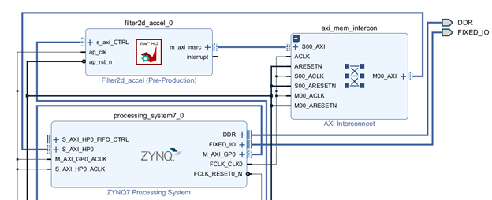
Example:
For example, consider the following loop calculation (in C):
Representing the loop calculation from the C code as a block diagram looks like this:
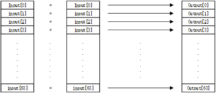
Usually, to minimize FPGA logic usage, only one multiplier circuit is used and reused (shared):
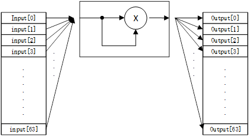
When converting C to HDL with HLS, the generated VHDL code looks like this:
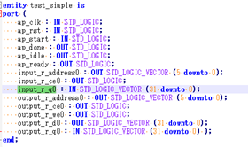
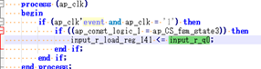
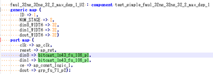
And we can also check the FPGA logic utilization rate:
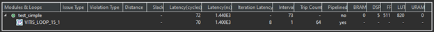
Latency refers to the number of cycles it takes for the output to be produced after the computation begins (i.e. after xxx cycles).
1.2.Creating IP with HLS
After creating an HLS project, the basic development flow is as follows:
1. C SIMULATION: Simulation at the C level, verified using a C testbench.
2. C SYNTHESIS: Synthesizing the C code into HDL.
3. C/RTL COSIMULATION: Co-simulation at the HDL level (verifying output waveforms using Vivado).
4. IMPLEMENTATION: Packaging the synthesized HDL as an IP in a zip file format.
‐ First, to create an HLS project, click File -> New Project
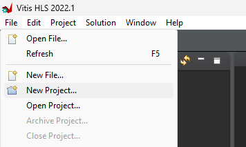
Set the project location and select the FPGA board model.
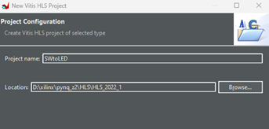
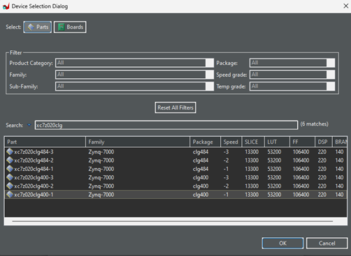
Right-click on Source and select Add Source File to add the C Source (the file to be converted to HDL). In this example, we will add SWtoLED.cpp. This test is a simple multiplication, where we prepare 2 switches (2 bits), multiply them, and display the result on the LEDs.
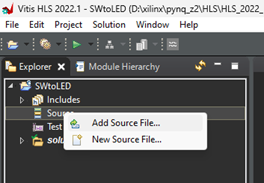
Right-click on Test Bench and select Add Source File to add the Test Bench (the C testbench used for verification). Here we will add SWtoLED_tb.cpp.
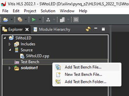
Now, the contents inside the project look like this:
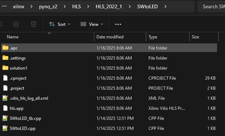
Then, click Project -> Project Settings -> Synthesis, and choose the C Source (the top function to be synthesized). In this case, we select swtoled.
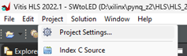
‐ The Flow Navigator contains 4 menus:
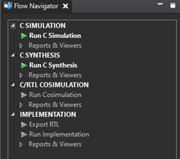
‐ Click C SIMULATION -> Run C Simulation to simulate at the C level. The C testbench (SWtoLED_tb.cpp) will generate test cases to simulate the design's behavior.
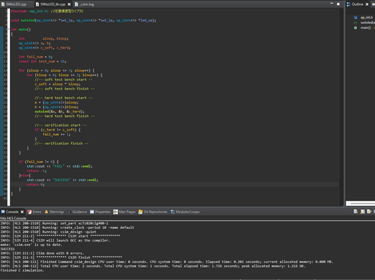
‐ Click C SYNTHESIS -> Run C Synthesis and set the target clock period for operation.
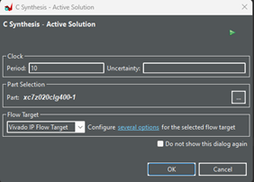
‐ Once finished, the synthesized HDL files will display the FPGA logic utilization report and the timing report.
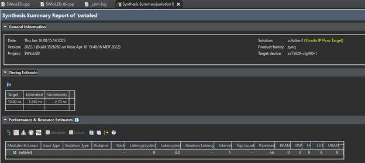
The Uncertainty value acts as a timing margin.
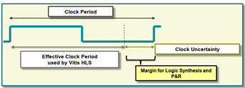
‐ Click C/RTL COSIMULATION -> Run Cosimulation
Dump Trace：port
Set Wave Debug: Enabled
Then, Vivado will open and display the simulation waveforms.
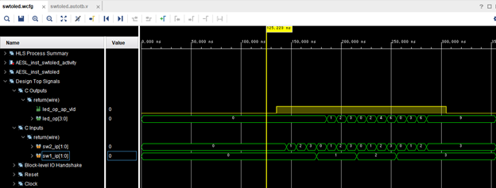
‐ Click IMPLEMENTATION -> Export RTL
Set Export Format to "Vivado IP"
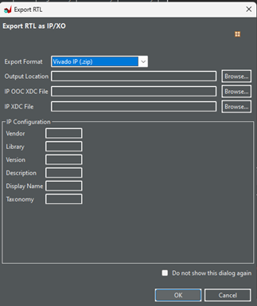
Upon completion, you will get an export.zip file, which can be imported into Vivado as a custom IP.
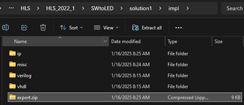
* Actually, you can reference the ip directory directly without needing export.zip.
1.3. Testing the HLS-Generated IP
- Extract the file obtained from HLS (Export.zip) to your desired location.
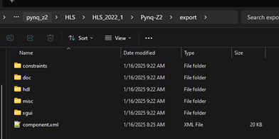
‐ In Vivado's IP Catalog, click Add Repository and add the HLS-generated IP.
‐ The added IP will be shown here:
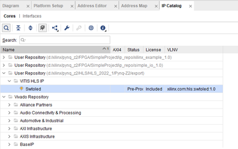
‐ Add the IP to the Vivado Block Design, connect it to external switches and LEDs, then compile in Vivado to generate the bitstream.
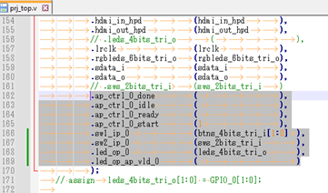
‐ Testing on the real device
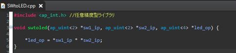
|
1*1 = 1 |
1*2=2 |
|
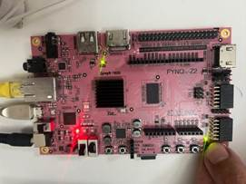 |
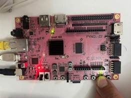 |
|
2*2= 4 |
3*2 = 6 |
|
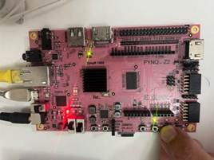 |
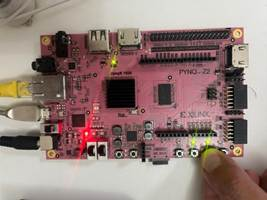 |
1.4. HLS Pragmas
HLS synthesizes C code into HDL, but the synthesis behavior is controlled by Pragmas. There are many types of pragmas; for full details, refer to the Vitis High-Level Synthesis User Guide (UG1399). Below we describe some common pragmas.
Interface
This is an HLS constraint that maps C function arguments to an AXI bus instead of simple signals. When the following pragma is added, function arguments will interface via the AXI bus. The AXI interface can be configured as a slave, master, or stream.
There are several ways to define the Interface. For example, if we add an Interface to the C Source used in section "1.2. Creating IP with HLS" as shown below, the exported IP will look like this, with addresses assigned automatically.
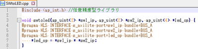
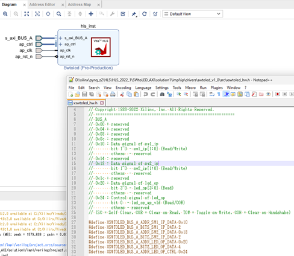
If you do not want addresses to be assigned automatically, you can add an offset.
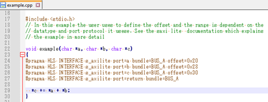
Pipeline
When converting with HLS, you can specify whether to use a pipeline.
* By default, HLS usually defaults to enabling pipeline.
Example:
|
With Pipeline |
Without Pipeline |
|
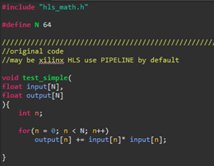 |
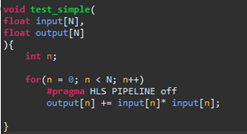 |
|
Pipeline |
FPGA Logic Utilization |
|
Yes |
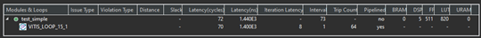 |
|
No |
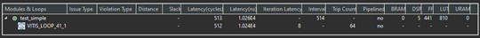 |
Without a pipeline, the calculation output = input * input takes 8 clock cycles. Therefore, if we loop 64 times, the total computation takes 64 * 8 = 512 clock cycles. But if a pipeline is used, the results are output much faster, though it slightly increases the FPGA logic utilization.
Unroll
This constraint enables parallelizing computation circuits when translating loops into HDL.
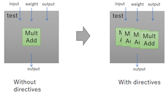
Example:
|
Without Unroll |
With Unroll |
|
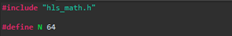 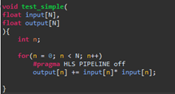 |
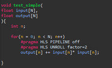 |
|
Unroll |
FPGA Logic Utilization |
|
None |
|
|
Factor=2 |
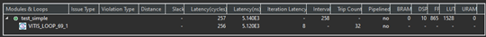 |
|
Factor=4 |
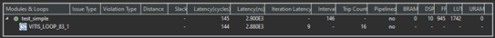 |
|
Factor=8 |
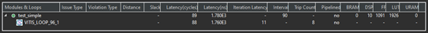 |
|
Auto |
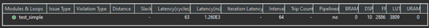 |
Unroll defines the number of parallel circuits based on the Factor value. For example, if Factor=2, two multiplier circuits will be instantiated. As a result, the calculation finishes faster than without unrolling (and of course, the FPGA logic utilization increases accordingly).
Dataflow
Specifies the execution model when transferring data between modules. Without Dataflow, the next module starts execution only after the previous module finishes processing all data. With Dataflow, the next module can start processing as soon as partial outputs become available from the first module.
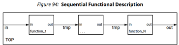
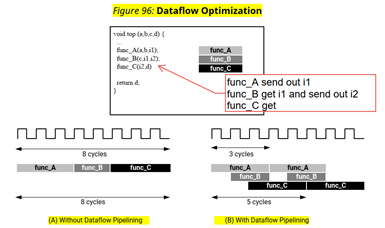
Example:
|
Without Dataflow |
With Dataflow |
|
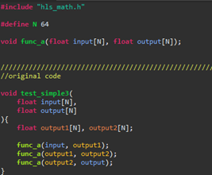 |
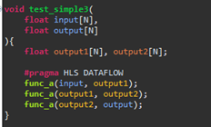 |
|
Dataflow |
FPGA Logic Utilization |
|
No |
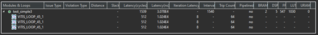 |
|
Yes |
|
When using Dataflow, the computation time is reduced from 1539 clock cycles to 513 clock cycles (and of course, the FPGA logic utilization increases).
1.5. Limitations / Unsupported Constructs
In the Vitis High-Level Synthesis User Guide, there is a section on "Unsupported C/C++ Constructs". Here is a brief summary: